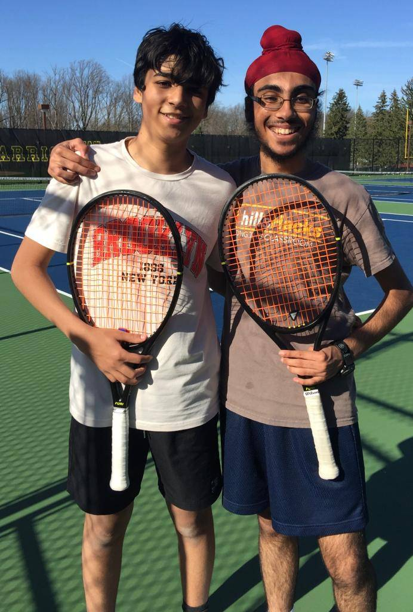
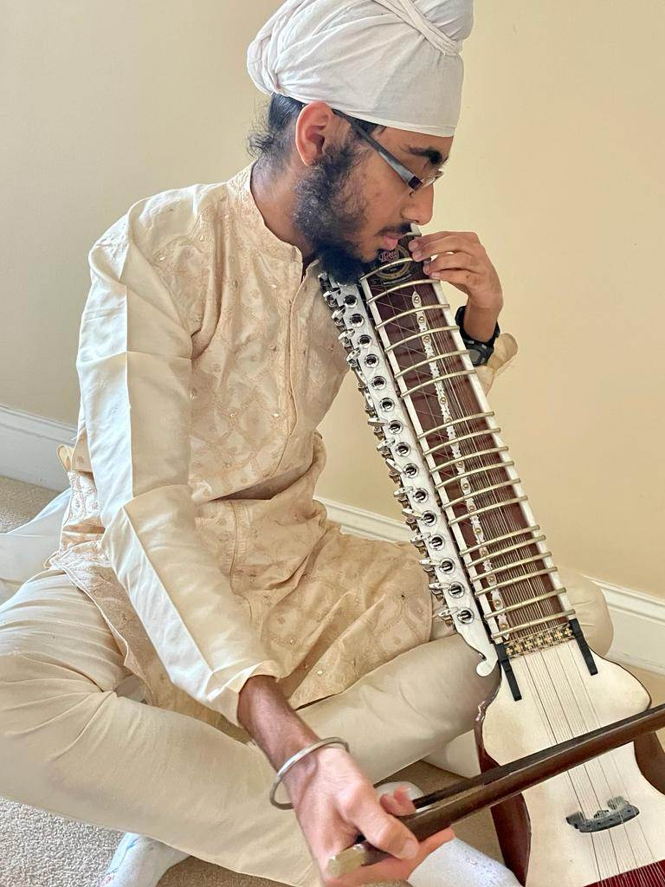

Anmol Bhatia


My Links
Brain Bee Recognitions:
Rutgers New Jersey Medical School LinkedIn page.
July 22 FENS Federation of European Neuroscience Societies News.
Brain Injury Association of America.
NJ Governor's STEM Research Program:
I was one of the top 120 students selected.
Currently studying the impact of social media and other communication mediums on the public perception of the efficacy of ivermectin in treating Covid-19.
Community Service:
My Buddy-Up Program was featured in the local news.
Alphademic Learning:
Our non-profit organization was featured in the local news Aug 2020 for donating medical gowns to Hope Hospice and Palliative Care in Scotch Plains.